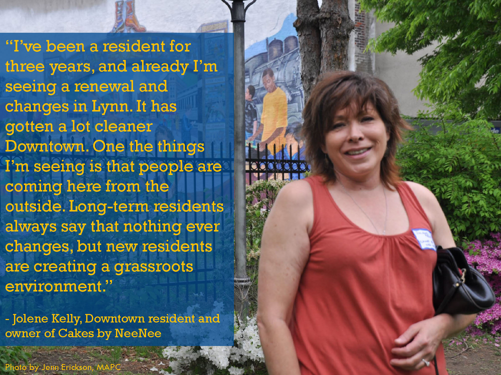
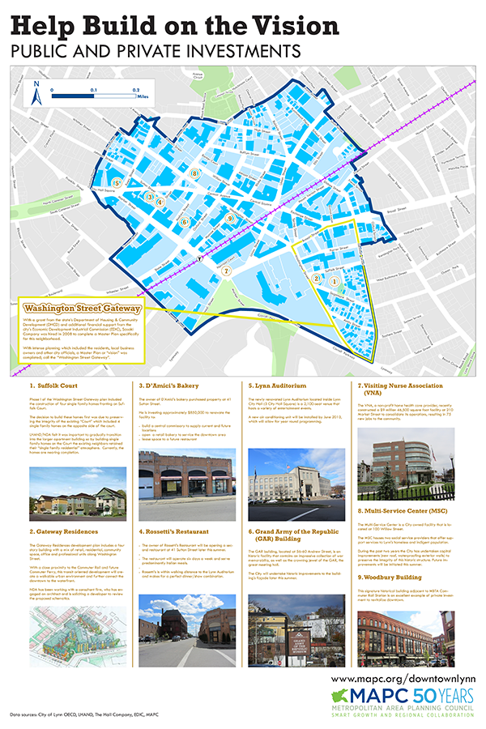
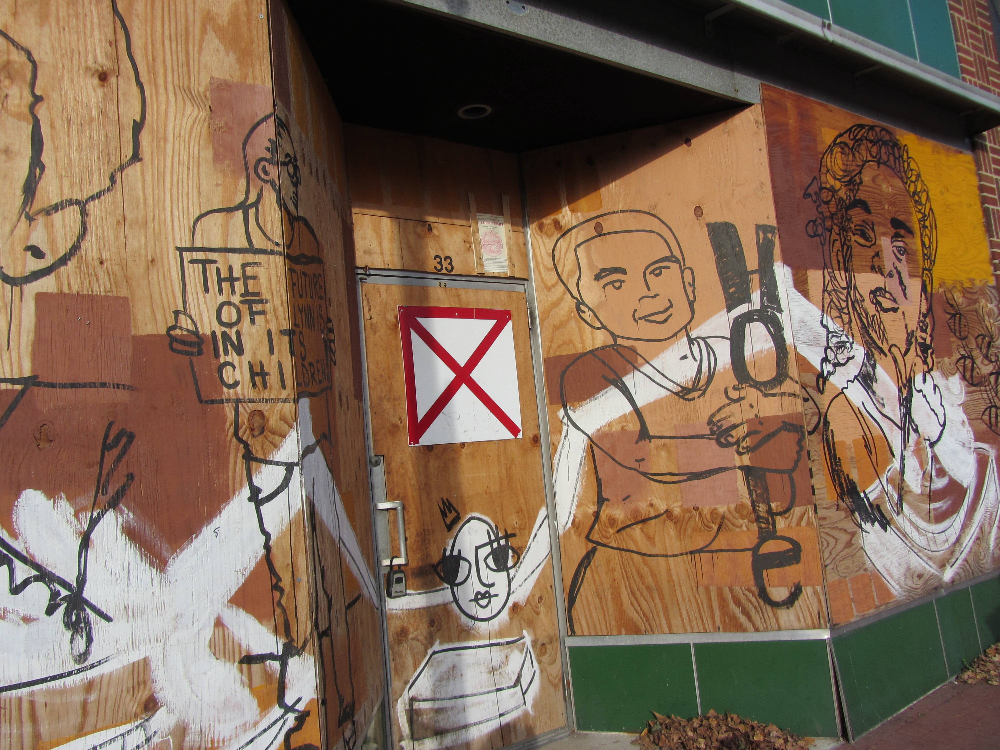

|  Downtown residents like Jolene Kelly, who also owns a business in Downtown called Cakes by NeeNee, are excited about Downtown's future. Photo by Jennifer Erickson, MAPC, from the May 23, 2013 Open House and Public Forum. |
|  The project team displayed this poster of public and private investments at the May 23, 2013 Open House and Public Forum. Data sources for the projects highlighted here are the City of Lynn Department of Community Development, LHAND, and the Hall Company's website. |

Since October 2011, the Stephen D. Hayes Building has served as the main site for the Lynn Community Health Center at 269 Union Street. LCHC maintains four locations throughout Lynn and also offers WIC, PACE, and school based health centers. Photo from the LCHC website. |
 The All Care VNA building in November 2012. Photo by MAPC. |
| 
Proposed Artist Live-Work Lofts at 33 Central near Central Square are next door to RAW Art Works in the Downtown Lynn Cultural District. EDIC has invested millions into this signature development, and RAW has helped to curate Lynn's image as a destination for the arts by painting temporary graffiti art on the boarded up building with positive messages about Lynn - such efforts help to signal renewal on the horizon. |
Infrastructure & Real Estate Investments
Recent public and private investments in Downtown Lynn and along the Waterfront have contributed to a palpable sense of enthusiasm for the City's future. This page highlights a few examples of investments in real estate development, property rehabilitation, and utilities or other physical infrastructure that the City of Lynn Department of Community Development, Lynn Housing Authority and Neighborhood Development, the Economic Development and Industrial Corporation of Lynn, and members of the project Team of Advisors shared with us. EDIC Executive Director James Cowdell said that in the past decade, "since 2004, at least $35 million has been invested by private developers and an additional $3 million in city funds have been invested in infrastructure improvements." Since the residential reuse of existing buildings was allowed following a 2003 zoning amendment that encouraged transit-oriented, mixed-use redevelopment of Downtown Lynn, "250 people have moved in and call Downtown Lynn their home" (Cowdell, "Developing News" publication by EDIC, Vol. 1. No. 1). EDIC maintains an informative listing of news articles regarding development in Lynn on its website; it is a great place to catch up on local development activity. The website includes numerous articles dating back to 2010. EDIC also has a list of properties to lease and purchase on the real estate page of its website.
Downtown lofts: After the 2003 zoning amendment allowing buildings to be reused for residences above the ground floor, "a number of former industrial and public buildings on Essex, Munroe, Franklin, Exchange and Mount Vernon Streets" have been converted into lofts (EDIC, "Developing News," Vol. 1 No. 1).
Waterfront site preparation and predevelopment: One of the first projects to implement the goals of the Waterfront Master Plan was the relocation of power lines that would have obstructed development opportunities. "In 2010, the city successfully relocated power lines from the harbor side of the Lynnway to the opposite side of the commercial corridor. It was the first, critical step in clearing a path for redevelopment of about 1.2 miles of waterfront property" (EDIC "Developing News," Vol. 1 No. 1). EDIC Executive Director Jim Cowdell has indicated that 150 acres of land have been cleared to facilitate Waterfront development.
Lynn Community Health Center Stephen D. Hayes Building: The three-story Stephen D. Hayes Building at 269 Union Street opened in October 2011 is a state-of-the-art facility that has allowed Lynn Community Health Center to "expand access to care" by providing additional space for "six new primary care physicians and six new behavioral health therapists," as well as to double its "dental space to include 12 operatories" (LCHC Annual Report 2012). The facility also includes an "expanded urgent care center" as well "patient education and wellness programs" (EDIC, "Developing News," Vol. 1. No. 1). Lynn Community Health Center reported that "forty percent of the residents of Lynn rely on the health center for their care" (LCHC Annual Report 2012). The new building "created over 100 new jobs" including construction jobs as well as permanent health care positions (LCHC Annual Report 2012).
All Care Visiting Nurse Association (VNA): The VNA, a nonprofit home health care provider, recently constructed a $11 million 46,500 square foot, five story facility at 210 Market Street to consolidate its operations, resulting in 75 new jobs to the community, according to Director of Project Operations Don Walker at the City of Lynn Department of Community Development and EDIC Executive Direct James Cowdell. All Care VNA & Hospice first established operations in Lynn in 1911 and in February 2012, merged two offices in Lynn, one in Charlestown, and one in Wakefield, when this building at the gateway of Downtown from the Lynnway opened. This property is adjacent to the MBTA Central Square Station and was vacant for over two decades. About 140 staff work in the building (EDIC " Developing News," Vol. 1, No. 1).
Multi-Service Center (MSC): The Multi-Service Center is a City owned facility that is located at 100 Willow Street. The MSC houses two social service providers that offer support services to Lynn’s homeless and indigent population. The City has undertaken capital improvements such as a new roof and waterproofing exterior walls to preserve the integrity of this historic structure.
Woodbury Building: This signature historic building adjacent to MBTA Commuter Rail Station is an excellent example of private investment to revitalize downtown.
Suffolk Court Phase I: Suffolk Court Phase I, which implements part of the Washington Street District Gateway Plan, included the construction of four single family homes fronting on Suffolk Court. The decision to build these homes first was due to preserving the integrity of the existing “Court” which included 4 single family homes on the opposite side of the court. LHAND/NDA felt it was important to gradually transition into the larger apartment building so by building single family homes on the Court the existing neighbors retained their “single family residential” atmosphere.
Gateway Residences: The Gateway Residences development plan includes a four story building with a mix of retail, residential, community space, office and professional units along Washington Street. With a close proximity to the Commuter Rail and Commuter Ferry, this transit oriented development will create a walkable urban environment and further connect the downtown to the waterfront.
41-47 Sutton Street: The owners of D’Amici’s bakery, Joseph and Sarah Torretta, purchased property at 41-47 Sutton Street in 2012 and invested approximately $850,000 to renovate the building to build a central commissary to supply current and future locations, open a retail bakery to service the downtown area, and lease space to a restaurant. Lynn EDIC provided a $200,000 loan and Tax Increment Financing to assist the renovation of this property. In September 2013, D'Amici's opened its Downtown Lynn Café at 41 Sutton Street, and Rosetti Restaurant opened next door at 47 Sutton Street in November 2013. These food establishments have become regional destinations and enhance the Downtown Lynn Cultural District's offerings.
Lynn Auditorium: The newly renovated Lynn Auditorium located inside Lynn City Hall (3 City Hall Square) is a 2,100-seat venue that hosts a variety of entertainment events. A new air conditioning unit was installed in 2013, which now allows the Lynn Auditorium to host events year-round.
Grand Army of the Republic (GAR) Building: The GAR building, located at 56-60 Andrew Street, is an historic facility that contains an impressive collection of war memorabilia, as well as the crowning jewel of the GAR, the great meeting hall. The City has plans to undertake historic improvements to the building’s façade.
33 Central: As stated in EDIC's "Developing News" publication (Vol 1. No. 1), "Central Square has redefined itself as an ideal living space for artists and young professionals, and the EDIC is helping to bolster that identity by investing $1.7 million to renovate an abandoned building at 33 Central Ave. into artist studios and lofts." This building, once home to Arnold's Stationery, is situated within the Downtown Lynn Cultural District, located between Columbia Insurance Agency and Raw Art Works. EDIC purchased it in September 2011 for $140,000 and plans to create eight artist live-work lofts on the top four floors as well as 960 square feet of commercial space on the ground floor. Artist live-work spaces are currently allowed in Downtown Lynn as of right under Lynn's zoning, indicating a policy investment the City has made alongside this capital investment. As of July 2013, it was reported on itemlive.com (the Lynn Daily Item) that the project is not yet complete and currently over budget, in part due to the increased cost of steel, but that EDIC is "committed to seeing the project through."
Commuter Ferry: The Lynn Commuter Ferry service was inaugurated on May 19, 2014. Phase I of the project, in 2008, included improvements by EDIC at the Blossom Street boat ramp and its surroundings (Lynn Daily Item). Phase II included installing a new steel bulkhead and expanding waterfront access to 150 feet from 60 feet (Lynn Daily Item). The Massachusetts Seaport Advisory Council awarded the city $3.2 million in July 2012 for Phase III of the project which included "dredging, installation of a 60-foot wave attenuator, a new pier and final upland improvements such as new sidewalks, paving, striping, and lighting" (EDIC, "Developing News," Vol. 1 No. 1). The state has invested $5 million toward this project and Senator Thomas McGee has been a vocal advocate for year-round ferry service in Lynn. The Commonwealth of Massachusetts considers this an investment in one of its Gateway Cities and anticipates significant job creation and local as well as regional economic development benefits as a result of its investment.